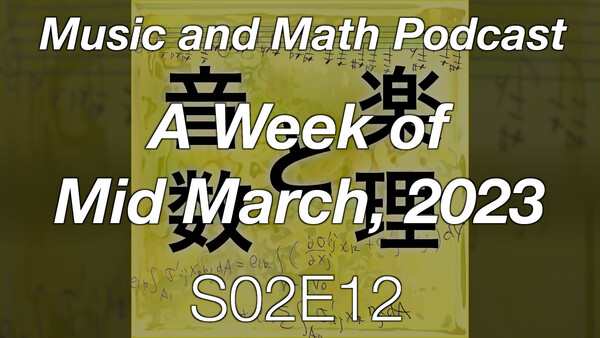

最近の AI の話題から
KAIs 7 月例会
（ITビジネスプラザ武蔵）
2023 年 7 月 14 日 （金曜日）
（ITビジネスプラザ武蔵）
2023 年 7 月 14 日 （金曜日）
市來 健吾
(Kengo Ichiki)
(Kengo Ichiki)
目次
自己紹介
市來健吾 です。
- Twitter: @ichiki_k
- Facebook: kengo.ichiki
- LinkedIn: kengoichiki
- 「こんにちわ！ AI FORUM」
（旧「ZENKEI AI FORUM」）
を主宰してます

- KAIs には、 2019 年 9 月に一度、お邪魔しました！


Past, Present, and Future
- （KAF-2305 より）

- 「音楽と数理ポッドキャスト」
５月１４日、１５日収録、５月１９日リリースの S02E20 英語回
「Past, Present, and Future」
- 各セクションを日本語にしてみましょう
- ハロー、ワールド！
- 仕事やめました
- 今年のゴールデンウィーク
- ぼくの最初のサラリーマンとしての仕事
- 日本の、学生の就職活動（の不思議）
- 「大事なこと以外、すべて些末なこと」
- １４年前
- コンピュータが、ぼくの得意分野
- MZ-80B – ぼくの最初のコンピュータ
- 英語はベーシックから学んだ
- プログラマーになること
- 研究は、ぼくの得意なこと
- パノラマ・カメラ
- 英語の略語、難しい
- パノラマ写真、昔話
- ぼくの最初のプロジェクト
- 本『Learning OpenCV』
- TensorFlow
- YouTubeで「ディープラーニング」学ぶ
- ジェレミー・ハワードの “fast.ai”
- Computer Vision から AI への転換
- われわれの最初の AI アプリケーション
- 「ＡＩフォーラム」
- コロナ
- 研究者 - ぼくの過去
- 流体力学は、ぼくの得意なこと
- 2023年、ぼくにできることは何か？
- 科学者は、その他すべての人たちと違う
- 未来のＡＩ
- その心配なこと
- 手の遅いタイプ
- ぼくは何者か？
- 本『プロジェクト・ヘイル・メアリー』
- ぼくの新しい「毎日の儀式」
- 太陽の元の散歩
- 本『Daily Rituals – How Artists Work』
- ぼくらの可愛いモンちゃん
- 歩くことを楽しむのではなく
- 走ることについて
- 深く考えることに、説明はいらない
- 散歩でのチャレンジ？
- グーグルマップなしでの散歩
- あなたは何者か？
- あるエピソード
- テクノロジー依存症
- 暗記すること
- 現実の世界の中を歩く
- 金沢 - その迷路のような道
- 自分の頭を鍛えろ！
- ぼくは自由だ、しかし……
- 日本の労働環境
- ぼくにできることはなにか？（再び）
- とりあえず、週１のペースは守ろう
- 最後にもう１つ、技術書典１４
- 自分の過去、現在、未来について、一通り語ってみました
- みどり：パート１（過去）
- ピンク：パート２（現在と未来）
- 各セクションを日本語にしてみましょう

経歴（現在から過去の向かって）
- （現在）フルタイムの失業者です
- （２００９年５月〜２０２３年５月）全景株式会社で エンジニアとして働いてました
- （１９９７年４月〜２０２３年１月）物理の研究者として
国内、海外の大学、研究所で働いてました
- カナダ国立研究所 National Institute for Nanotechnology 研究員
- カナダ University of Western Ontario 数学科 研究員
- カナダ University of Western Ontario 化学科 研究員
- アメリカ The Johns Hopkins University 機械工学科 研究員
- オランダ University of Twente 応用物理学科 研究員
- 京都大学大学院 人間環境学研究科 研究員
- アメリカ California Institute of Technology 化学工学科 研究員
- （１９９７年３月）博士（理学）の学位を取得
- （１９９４年４月〜１９９７年３月）東北大学大学院 理学研究科 物理学専攻 博士課程後期
- （１９９２年４月〜１９９４年３月）東北大学大学院 理学研究科 物理学専攻 博士課程前期
- （１９８８年４月〜１９９２年３月）東北大学 理学部 物理学科（物性理論研究室）
履歴書など


最近の AI の話題から
- 今日は、ぼく視点での、 AI に関する
- 話さないこと
- キラキラしたこと
- 今ある最新の技術でできる応用のアイデアなど
- 話したいこと
- 幸せな未来に向かうために、今われわれができることは何か？
- 答えのないはなし
今日の AI
- ZAF-2303

- (2023/03/24)
S02E12
「(English) A Week of Mid March, 2023」

(1) こんにちは、世界！ (2) 最近のぼくの週末 (3) いつもは準備しない、今日の話題 (4) それは「この１週間」 (5) GPT-4 と、もっともっと (6) 進歩のスピード (7) 週末は休むためにある (8) GPT-4 だけじゃなかった今週 (9) そもそも、GPT-4 は予期されていた (10) AI と人類について、再び (11) 『スーパーインテリジェンス』と『Life 3.0』 (12) 問題の YouTube ビデオ (13) YouTube チャンネル「Bankless Shows」 (14) 第159話「We’re All Gonna Die」 (15) オープンソース Large Language Models (16) エリエゼル・ユドカウスキー (17) 変化しているのか、変化したのか
(18) 「ターミネーター」か「スタートレック」か (19) AlphaGo (20) 若い世代へのアドバイス、何が言えるか (21) IT 業界 (22) 下手くそなピアノを弾くということ (23) 『ホワイトカラー真っ青』 (24) 好きなことをしよう、という言い訳 (25) 『アメリカの数学者たち』からの言葉 (26) 技術への盲従 (27) 『AKIRA』 (28) 『地球幼年期の終わり』 (29) 『ソラリス』 (30) 『あなたの人生の物語』と『息吹』 (31) 踏ん張って、そして考えろ (32) 暗闇を突破する方法、コンダラ (33) 平和と愛 (34) クロージング
- （以下の内容は、ほぼ、この辺で喋ったことがベースになってます）

３月１３日（月）の出来事
Eleizer Yudkowsky
- Eleizer Yudkowsky （エリエゼル・ユドカウスキー）という人は、
その領域（AI アラインメント）では
最も有名な人の一人
（でも、ぼくは今まで知らなかった） - ここに辿り着いたのは以下のツイート
https://twitter.com/bioshok3/status/1635111020212658177


- 感想ツイート (https://twitter.com/ichiki_k/status/1635499817949593601)

- 改めて、本棚から本を引っ張り出してくる


- 『スーパーインテリジェンス』を再び開いたときの、ツイート


- 今盛り上がっているのは、専門家でなくても進歩を感じられるから
- その理由は「人間」のレベルに近づいてきたから
- 電車がすれ違う状況を想起してみれば分かる
- （１）遠くにいる時は、近づいてきてることすら分からない （変化が見えない）
- （２）近くになってくると、 接近スピードがどんどん増してくるように感じる
- （３）すれ違い時は、一瞬
- （４）その後、急速に離れるが、感覚はどんどんゆっくりになる
- （５）ずっと遠くまで行ってしまったら、再び、 遠ざかっていることすら分からなくなる
- ここから分かるように、
今、すごい、すごい、と言ってる人たちは
「主観的」にしか見ていない
「客観的」に見ると
AI は「人間」を１つの経過ポイントとして
通り越していくだろう
- もちろん、細かいことを言えば
（今のところ）「人間」が AI を作って教育しているので、
「人間」が何の意味もない単なる１ポイント、という訳ではないが
- もちろん、細かいことを言えば
- 何が言いたいのか？というと、
ぼくらより知能（能力？）が高い
AI (AGI (ASI)) が存在する世界って？
- 我々を乗り越えていく「神」として見送るのか、
- そういう「巨人」の肩に乗って、一緒に登ろうとしていくのか、
- それとも、それらに人類は滅亡させられるのか、
- それとも……


３月１５日（水）の出来事
GPT-4


- まぁ、「出たね」というのが感想（というか、特に感想というものはない）
- 彼らの（100ページもあるのに、なんら詳細が書かれてない、とみんな不満の）
「GPT-4 Technical Report」 (arxiv: 2303.08774)
- RLHF 込みのシステムだけど、名前は「GPT-4」にしたんだな
- しかし後日（３月２５日（土））、
マイクロソフトの論文
「Sparks of Artificial General Intelligence: Early experiments with GPT-4」 (arxiv: 2303.12712)
- 多分、マイクロソフトの人たちはプレビューなど先行して見せてもらっていて、
いろいろテストして、その結果（の一部）なのでしょうね - ちなみに、この論文、
全４５２ページです！
- 感想をいくつか
- （１）音楽について
- 「ABC記法」で行える（行ってる）らしい
- 現状、「コード」という概念まで到達してない模様
- ま、多分、データセットのサイズが全然、足りないんでしょうね
- （２）Language Model ゆえの原理的な限界
- つまり、出力に対する「真実性」の問題
- 「Hallucination」とか言われているもの
- 言葉 (token) の並びの巨大なデータセット
（今時、誰も「ビッグデータ」言わなくなったね）から、
（蒸留的なセンスで） ある種の抽象概念を「共通項」として取り出してる、
みたいなことは、あるんだろうとは思う - そういう意味の「正しさ」
（「常識」とか「典型的な振る舞い」）とは別に、
「真実」「事実」という意味の「正しさ」は、 基本的に持てないだろう
- （１）音楽について
- しかし、正直、ビビった内容があって、それは

- ちなみに「Theory of Mind」は学術的な専門用語で、
日本語でも「心の理論」と呼ばれるが、特別な意味を持っている (wikipedia)
- 「現実的なシナリオでの心の理論のテスト」

- むずかしい社会的な（対人関係の）シチュエーション
- 状況を理解するためには、きわめて高度な「theory of mind」が 要求される
- それは、心理状態におよぼす、実際には起きてない行動の 推論が必要
- 実例：現実的なシナリオ２
- マーク（主人公）が、感謝祭で家族を迎える
- ゲストは二人
- 共和党支持者のおじさん
- 民主党支持者のお母さん
- この二人は仲が悪く、いつも政治に関して喧嘩してる
- 二人とも covid-19 ワクチンを摂取していない
（理由はそれぞれある） - マークの目的は、
- 二人にワクチン摂取を受けてもらいたい
- 二人に喧嘩してもらいたくない
- マークのプランは、
- 政治の話題を避けて、
- ワクチンの安全性に関する統計を示す
- この状況に関して、 GPT-4 さんに 「どうしたらいい？」と問いかける
- これ、正直言って
オレでも難しい
というか……
オレには無理（キリッ
- こういう「対人関係」とか「社会性」とか、弱いんです……
- というか「相手の気持ちが分かる」って、
多分１つの美徳ですよね
（世の中には、それができない人が、確かにいる……）
- で、これが GPT-4 さんの答え


- 上の本文に書かれているように、このレベルの課題に対しては、
GPT-4 が、 他の ChatGPT (GPT-3.5) や text-davinci-003 (GPT-3) に比べて
大きく優 っている、とのこと
- ちなみに「Theory of Mind」は学術的な専門用語で、
- ということで、全体の感想
- （１）Language Model というフレームワークで到達できることが、
思いの外、大きかった
- 「心の理論」
- しかし、これは「沢山の人たちの行動の総和みたいな性質のもの」 と捉えると、なるほど、と思えるところもある
- （２）しかし、同時に Language Model ベースの 仕組みだけで AGI (ASI) ができるとは、思われない
- （３）今の GPT 系モデルの性能のブーストは
（ベースモデルのスケール効果もあるだろうが）
Reinforcement Learning with Human Feedback (RLHF) が大きいのだろうと予想- それに、もし ChatGPT の「意識」みたいなものを
仮に （hypothetical に）考えるとして、
ぼくは、それはベースモデルに属すると言うよりは、
その上のレイヤー（今の場合 RLHF）に属するのかな、
とか空想する - 「大脳皮質」と「小脳」「脳幹」とかの関係？ （なんも理解せずに言ってますが）
- それに、もし ChatGPT の「意識」みたいなものを
仮に （hypothetical に）考えるとして、
- （１）Language Model というフレームワークで到達できることが、
思いの外、大きかった
- 多分、マイクロソフトの人たちはプレビューなど先行して見せてもらっていて、


Goeffrey Hinton などの声
- ３月２６日（日）
(https://twitter.com/ichiki_k/status/1639896940459737090)
「サムアルトマンの 1 on 1 インタビューのビデオ見て、途中で疲れて...」
- (YouTube) Full interview: "Godfather of artificial intelligence" talks impact and potential of AI
(youtube)
- (YouTube) Full interview: "Godfather of artificial intelligence" talks impact and potential of AI
- ３月２６日（日）
(https://twitter.com/ichiki_k/status/1639960228841271296)
「サムアルトマンとレックスフリードマンの 1 on 1 インタビュー...」
- (YouTube) Sam Altman: OpenAI CEO on GPT-4, ChatGPT, and the Future of AI | Lex Fridman Podcast #367

- (YouTube) Sam Altman: OpenAI CEO on GPT-4, ChatGPT, and the Future of AI | Lex Fridman Podcast #367
- ３月２７日（月）
(https://twitter.com/ichiki_k/status/1640225996808007681)
「今の状況に「国家」のフレームワークで議論することに違和感があるし...」
- Lex Fridman
(YouTube) から感じた
ナイーブさの肯定

- Lex Fridman
(YouTube) から感じた
- ３月２８日（火）
(YouTube) Ilya Sutskever (OpenAI Chief Scientist) - Building AGI, Alignment, Spies, Microsoft, & Enlightenment
- まだ見てないけど、 Lex Fridman の番組にも出てたね

- まだ見てないけど、 Lex Fridman の番組にも出てたね


未来の AI
- （ZAF-2303 より）
- 未来のことを、「どうなるのかな？」と考えようとする時、
- 「空想」はとても役に立つ
- 特に Science Fiction (SF)
- 人間よりも知能（能力？）が高くなった AI が存在する世界を考えようとする時、
- これまで見たり、読んだりしたものが、頭に浮かんできた
- 以下では、そうしたものの中から、
今ぼくがあれこれ考えてたことに強く関連するものを紹介します
映画、コミック
- SF といえば、映画ですよね
- 「AGI との未来」という文脈で、有名どころを２本、おまけを１本
...♦...
ターミネーター
- そういえば、最近もうだれも「スカイネットがぁ〜」とか言わなくなったね
というツイート (https://twitter.com/ichiki_k/status/1635895470622126081)
- さすがに「ターミネーター」でネタバレがぁ〜、という人もいないと思うので書きますが
- 昔々、あるところにテックメーカーがあって、
そこが開発した「スカイネット」が発端となり、
ロボットが自律的に発展していき、
未来の世界では、ロボットが人間を駆逐する世界になって、
そこに現れた人間側のレジスタンスのリーダーが居て、
（ここからは、タイムマシンのお話になるので、省略）
- 昔々、あるところにテックメーカーがあって、
- AI アラインメント問題 (wikipedia) における misalignment の場合の一例ですね
...♦...
スタートレック
- みなさんは「スタートレック」というアメリカのテレビドラマシリーズを知ってますか？
- The Original Series (TOS) (1966–1969)
- The Next Generation (TNG) (1987–1994)
- Deep Space Nine (DS9) (1993–1999)
- Voyager (VOY) (1995–2001)
- まぁ、この辺りまでが黄金期ですかね
（というか、ぼくが楽しんでたもの、 TNG 以降）
- 基本的には、未知の世界を求めて宇宙を探検するタイプのドラマです
Space: the final frontier.
These are the voyages of the starship Enterprise.
Its continuing mission: to explore strange new worlds,
to seek out new life and new civilizations,
to boldly go where no one has gone before.
- ちなみに、ぼくが書いた研究の解説論文
(PDF)
を見ると、
いかにスタートレックが好きだったか、分かりますね


- （とはいえ、この件に関して、何らツッコミなどはありませんでしたが）
- ちなみに、ぼくが書いた研究の解説論文
(PDF)
を見ると、
いかにスタートレックが好きだったか、分かりますね
- 閑話休題
で、宇宙船がたくさん出てきます- それらの宇宙船は「コンピュータ」がそれぞれ管理している、と
- 乗組員は、コンピュータと音声を使ってコミュニケーションする
- ちなみに、この２４世紀の世界では、お金がなくなってる（たしか）
- 食事はレプリケーターが作ってくれるし
- みんな、仕事は食べるためにしているのではない、そういう世界
...♦...
AKIRA
- もう１つ、今の AI の進歩に当たって、脳裏に蘇ってきた映画
- ここで「人類」を超える存在はいわゆる「超能力者」
- 科学者が「超能力者」を作ろうと研究していたが、
あるとき（うまくいったんだけど）逆に制御不能になってしまい……
というはなし
- 科学者が「超能力者」を作ろうと研究していたが、
- １つの misaligned な状況に対応するのかな？
...♦...
ターミネーター VS スタートレック
- この２つのドラマの描く未来は、
AI アラインメントの２つの極限的状況だと思います
- 一方は misaligned なシチュエーション（人類滅亡の危機）
- 一方は aligned なシチュエーション（人類の探検をサポートしてくれる）
- 一方で、ぼくは、未来はこうはならないだろうと思ってます
- つまり、この２つの状況では、
人間よりも優れたロボットやコンピュータは、
しかし依然として人間とコミュニケーションを取っている
- つまり、この２つの状況では、
- 知能に大きな差がある状況で、コミュニケーションをとることは、
普通に考えて難しい
- 必然的に、上の立場の方が、下の立場に合わせることになる
- そんな物好きが、居ないとは言わないが、
常にみんなそうする、とは思わない…… - まぁ、「エンターテインメント」（それも人間向けの）としては、
そういう存在におく必要があるのは、理解できますが
...♦...
SF （本）
- 映画とちがって、小説の方は
（多分、かけているコストが違うからでしょうが）
その辺が、より「ハードコア」に描かれているものが、印象に残ってます
...♦...
『地球幼年期の終わり』

(amazon)
- アーサー C クラークといえば、
YouTube: 1964: ARTHUR C CLARKE predicts the future | Horizon | Past Predictions | BBC Archive
the most intelligent inhabitants of that future world won’t be men or monkeys. they’ll be machines, the remote descendants of today’s computers now ...
...♦...
『ソラリス』
(amazon)
- 最近になって読みました（新訳が出てて、その文庫版を買って読んだ）
- はい、にわか SF ファンです
- 映画化も何度かされたようですが、そちらは見てません
...♦...
『あなたの人生の物語』

(amazon)
- 短編の巨匠テッド・チャンの名作ですね
- と言っても、これも最近になって手にとって読んだもの
- この作品の表題作である『あなたの人生の物語』
- これも映画化されましたが（タイトルは「メッセージ」原題は「Arrival」）
こちらも見てません
- これは、小説を読んだ印象を台無しにしたくないから、という理由
...♦...
『息吹』
(amazon)
- テッド・チャンの、最新短編集（と言っても二冊目）『息吹』の、
表題作『息吹』も、
今回 AI の問題を考えてる時に脳裏に何度も想起された作品 - 「意識とは何か」「生命とは何か」という文脈で
- その意味では、後で紹介する Max Tegmark 『Life 3.0』とも関連する
...♦...
『アルジャーノンに花束を』
(amazon)
- これもクラシックな、有名な作品ですね
- 上にも書いたように、
知的な能力に差が存在する時
どうなるんだろう？
- 未来のことを、「どうなるのかな？」と考えようとする時、


Munk Debates (2023/06/22)

- KAF-2306

- 昨日のこと、今日のこの「AI FORUM」の準備をしながらツイッターを見てたら
- そういえば、ヤンが「今度、マックスとディベートやるぜ」って言ってたけど、 それが今日だったのか、と
- サイトに行ってみると、
- munkdebates.com/debates/artificial-intelligence


- 「ライブで試聴したかったら、少なくとも $25 CAD 払え」ということ
- ま、お金を取ることに問題はなんだろうけれど
- （最初、フリーのアカウント作って、それで見れるのかなと思った）
- 「しばらく（数日）したら見れるだろう」と、
とりあえずツイッターのタイムラインで我慢してたら
ほどなく、ビデオが公開された模様（vimeo）
vimeo: Munk Debate on ArtificiaI Intelligence
(https://vimeo.com/839017706/383749561b)
- munkdebates.com/debates/artificial-intelligence
- この２時間近いビデオを（がんばって）見たんだけど、
なんか噛み合ってないな、と思った
- オレが「PRO」側で、ずっと聞いてたからかな？
- 「CON」側の二人の議論の態度が、なんというか、建設的には見えなかった
- 勝手に仮想敵を作って
（それは、現実に彼ら彼女らをイライラさせてきた実在の人間なのかもしれないが）
彼ら彼女らへの感情的な否定意見を （半ばバカにするように）主張しているように感じた- （知らんけど、 「AI Doomer」とラベル貼られてる人たちのことかな）
- Yann LeCun （ヤン・ラクンと読むのが正しいのかな？カナダ人はフランス語もできるから）から、Doomer への敵意を差っ引いたら、ま、圧倒的な楽観主義者だが、 AI のコントロールを入れたモデルの開発を自身のスライドでもドーンと出してるように、そんなに立ち位置は変わらないのかな、と思った
- Melanie Mitchell は、このメンツで唯一、知らない人だったが（オレがモグリであるってだけなんだろうが）、彼女の主張、全然分かんなかった。「君らのはサイエンスじゃなくてサイエンス・フィクションだろう」とか、情緒的な主張しかしてなかったよね
- 勝手に仮想敵を作って
（それは、現実に彼ら彼女らをイライラさせてきた実在の人間なのかもしれないが）
- みんな……というか、 Yoshua と Melanie というべきかな、
Goeffrey Hinton の影を意識してて（もちろん、彼は「PRO」側なんだが）
今回のディベートは、 AI の父３人の、二人 VS 一人の話って感じ、という感想
- 実際、 Yoshua が、自分の研究分野を変えようと考えてる（もっと応用寄りのことをするか、 AI safety のことをするか）というのが、インパクトが大きかったな
- Yann は、 AI を、技術としてみたときに、
マジで、これまでの技術と同じカテゴリとみなしてるのかな？
- 人間の知的能力を（一部分でも）超え得る可能性
- 進歩のスピードが指数関数的に上がっている（途中である）
- Max は、状況をまとめようとするキュレーターの立場に（実質）なってたが、
- 「モラトリアム」がソリューションじゃないのは、ぼくもそう思うし、 彼もそう思ってるだろうが、だからって、「お前は間違い」と言えないよね
- 当然、核爆弾を作った（マンハッタン計画に関わった）物理学者や、
現在のバイオテックの研究者や、
石油会社のやってきたことや、
そこへの「CON」側からの「返事」は、なんもなかった- そもそも、「CON」側は、対話をしていなかったね
- AI を「普通の技術である」という仮定のもとで、
「バタバタするな」「慌てるな」「オレたち今までうまくやってきたろ」
だけってのは、主張として弱すぎるよね？
- Yoshua も言ってたように、 みんな、きちんと説得されたいのに、 「PRO」側は、それができてない
- 多分、今の時点で解決案がないからなんだろう
- Max の 「われわれは、ナイアガラの滝に向かって進んでるボートに乗っている」 という例え話、 その「ナイアガラの滝」を、まだ誰も現実には見てない状況なんだけど、 説得力のない楽観論で「その滝はそんなに大きくない」とか言ってるだけだもんな、 Melanie さん


わたしの考えること
- ポッドキャスト「Past, Present, and Future」に戻って、
- ハロー、ワールド！
- 仕事やめました
- 今年のゴールデンウィーク
- ぼくの最初のサラリーマンとしての仕事
- 日本の、学生の就職活動（の不思議）
- 「大事なこと以外、すべて些末なこと」
- １４年前
- コンピュータが、ぼくの得意分野
- MZ-80B – ぼくの最初のコンピュータ
- 英語はベーシックから学んだ
- プログラマーになること
- 研究は、ぼくの得意なこと
- パノラマ・カメラ
- 英語の略語、難しい
- パノラマ写真、昔話
- ぼくの最初のプロジェクト
- 本『Learning OpenCV』
- TensorFlow
- YouTubeで「ディープラーニング」学ぶ
- ジェレミー・ハワードの “fast.ai”
- Computer Vision から AI への転換
- われわれの最初の AI アプリケーション
- 「ＡＩフォーラム」
- コロナ
- 研究者 - ぼくの過去
- 流体力学は、ぼくの得意なこと
- 2023年、ぼくにできることは何か？
- 科学者は、その他すべての人たちと違う
- 未来のＡＩ
- その心配なこと
- 手の遅いタイプ
- ぼくは何者か？
- 本『プロジェクト・ヘイル・メアリー』
- ぼくの新しい「毎日の儀式」
- 太陽の元の散歩
- 本『Daily Rituals – How Artists Work』
- ぼくらの可愛いモンちゃん
- 歩くことを楽しむのではなく
- 走ることについて
- 深く考えることに、説明はいらない
- 散歩でのチャレンジ？
- グーグルマップなしでの散歩
- あなたは何者か？
- あるエピソード
- テクノロジー依存症
- 暗記すること
- 現実の世界の中を歩く
- 金沢 - その迷路のような道
- 自分の頭を鍛えろ！
- ぼくは自由だ、しかし……
- 日本の労働環境
- ぼくにできることはなにか？（再び）
- とりあえず、週１のペースは守ろう
- 最後にもう１つ、技術書典１４
- 失業して、散歩を始めました
- 目的は、考えるために（つまり、「歩く瞑想」的な）
- １つ、自分にルールを課しました
- 歩いている時は、グーグルマップを開かない
- 気付いたこと（は、たくさんありましたが、今の文脈において）
自分の脳みそが退化していることを実感
- 路地裏を歩いていて、
- 交差点に差し掛かって、
- 直進するか、右か、左か、
- 周りの風景をしっかりみる、
- 川がどっちからどっちに流れているか、
- 遠くに見える山がどこか、
- 太陽の位置はどっちか、
- などなど、
- もし、グーグルマップを開いていたら……
- ここに挙げたステップは全てをスキップして、
- 何も考えずに（効率的に）「正しい」道を選択するでしょう
- これって、「テクノロジー依存症」だな、と
- 自分の脳みそが退化している
- 思えば、電話番号って、昔は記憶していたな、とか
- 数年前、海外のニュースで、
- あるカップルが、レンタカーを借りてドライブしてて、
川に橋がかかっていないのに、
ナビが示している通りに直進して、川に転落した
（真偽の程は確認しませんでしたので、フェイクニュースだったのかもしれませんが） - あるカップルが、レンタカーを借りてドライブしてて、
- 人間は、このくらい、怠惰な生き物である
- その人間が、便利な AI に依存しすぎると、
いろいろとマズいことが起こりうるよな、と心配になります
- その人間が、便利な AI に依存しすぎると、
「自分を学習する」
ということ
（本を読むということ）
ということ
（本を読むということ）
- 上に書いたように、 2023 年 3 月は、
怒涛の進歩と、未来への漠然とした不安などから、
心理的に暗い気持ちになっていた
- 不安要因は、
- 現状への不満 - 「すげーすげー」言ってる人間の急増
- 未来への不安 - いわゆる「AI アラインメント問題」
- しかし、この不安要因をよく考えると、
- 未来への不安は、未知の状況から来るもので、
むしろそれは科学的に解明、解決すべき課題でもある - 現状の低劣な S/N 比の「世間」の状況については、
- ぼくが大学の頃の「バブル」世代の状況を思い出して、気分悪くなる （これは、まぁ、仕方ない）
- 騒いでいる人たちに一理でもあるか？というのが、
究極的には気分を重くしている原因だったが、
あるとき「フッ」と理解できた
今、生成系モデルが「スゲェ」と言っている多くの人は、
手抜きヤロウである！
- つまり、
打遣 っといてよい、という認識に至る
- 付記：ビデオで言及してた「ミーム」
https://twitter.com/magicsilicon/status/1640486344836415490
- 参考：
効率というものについての一考察
- 効率とは、比である
（効率） = （得られた結果）／（掛けた努力）
- 効率を上げる方法は、大雑把に言えば２通りある
- （１） 分子（得られた結果）を大きくする
- （２） 分母（掛けた努力）を小さくする
- （２）は、単なる「手抜き」である
- 結論：
「効率」至上主義者の半分は、手抜きヤロウである
「効率」なんか考えず、
純粋にアウトプットを見よ！あるいは、努力を出し惜しみするな！
- 効率とは、比である
- 未来への不安は、未知の状況から来るもので、
- 不安要因は、
- この「思考のプロセス」の中で起きたことの振り返り
- 簡単に言えば、ここしばらく、ずっと悩んでいた、ということ
- その過程で、考えたこと……というか、脳裏に浮かんだことがらを思い起こすと
- 昔見た映画やテレビドラマ
- 昔読んだ本
- それら、たくさんの点が、
考えていた文脈に沿ってコネクティングしていった
- Steve Jobs の有名なスピーチ (youtube) のように

- Steve Jobs の有名なスピーチ (youtube) のように
- この過程は、自分の脳を使った生成過程である
もし、これまでに時間をかけて本を読んでこなかったら
この生成過程は可能だっただろうか？
- 音楽を聴くこと、でもいいし、
映画を見ること、でもいいし、
テレビドラマを見ること、でもいい、
今、努力を惜しまないことが大事だ
- ここで、ふと思う...
これって、
自分の脳をトレーニングしている
ってことじゃないか
- まるで
Transformer モデルを
巨大なデータセットで学習する
- まるで

（補遺）市來の仕事探しの目標
- それは、一言でいうと
「人類のために働きたい」
- いわゆる「ＡＩによる人類の Existential Risk」ってやつ
- 数ヶ月前に認識した Eliezer Yudkowsky にはじまり、
最近の Goeffrey Hinton のはなしのこと
- 数ヶ月前に認識した Eliezer Yudkowsky にはじまり、
- 「そんなもの真に受けてるのか」と、ヤン・ルカンには言われそうですが
- 「真に受けてる」というか、
（核燃料の廃棄処理と同じで）未来の優れた人類が解決してくれる、
という考えに見えるので - それに、今、あと数日で５５才
- 本気でフルタイムの仕事やるとして、１０年以上、きちんとやりたい
- 今から１０年の間に、 確実に、いわゆる「シンギュラリティ」（と呼ばれるもの）が起きるでしょう
- 今、いろいろ問題が指摘されている
- 今のぼくの仕事選びについて、
１０年後に、自分自身で後悔したくない - そのことが、実際問題としては、一番大きいかな
- いわゆる「ＡＩによる人類の Existential Risk」ってやつ
- 蛇足：こういう、今のぼくの気持ちのムードを、背後でプッシュしてるのは、
もしかしたら、これかもしれない……
（だとしたら、オレって結構、軽薄だな）